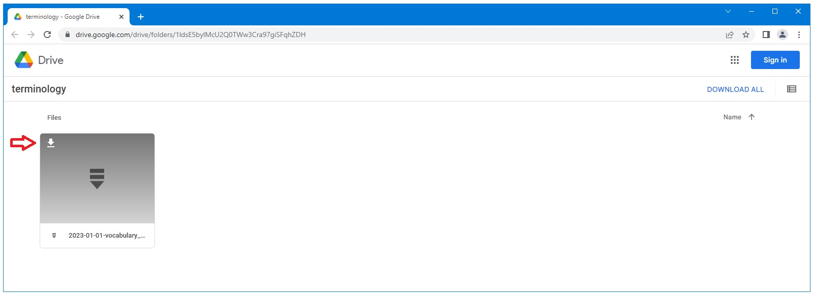

Ponos Quick Start Guide: Download and Install Terminology Resources
Use the link below to navigate to the site hosting the terminology files:
Download Terminology

Move this file to C:\_YES\tools\terminology\fhir-to-omop\for-testing.
Extract the file and rename the directory containing the csv files to "csv"
The resulting directory should contain the files shown below.